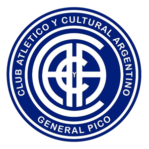

El Club Atlético y Cultural Argentino, fundado el 1° de agosto de 1920, es una de las instituciones deportivas más antiguas y tradicionales de la Ciudad de General Pico. Conocido popularmente como "El Decano", el club forjó una identidad inquebrantable gracias a su fuerte arraigo y presencia en el barrio Pacífico, convirtiéndose en un punto de encuentro fundamental para los vecinos y familias de la zona.
A lo largo de su más de un siglo de existencia, Cultural Argentino ha sido un semillero constante de talentos, destacándose históricamente por su participación en la Liga Pampeana de Fútbol. En la actualidad, el club mantiene vivo su compromiso social y deportivo compitiendo activamente en Fútbol Infantil, Divisiones Inferiores, Fútbol Femenino y Primera División B, demostrando que su legado continúa vigente en las nuevas generaciones.